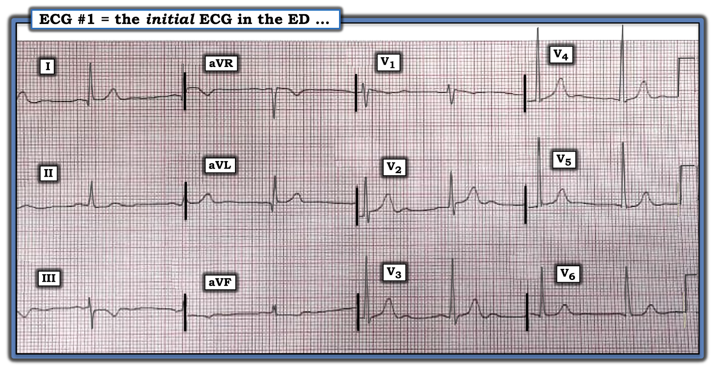
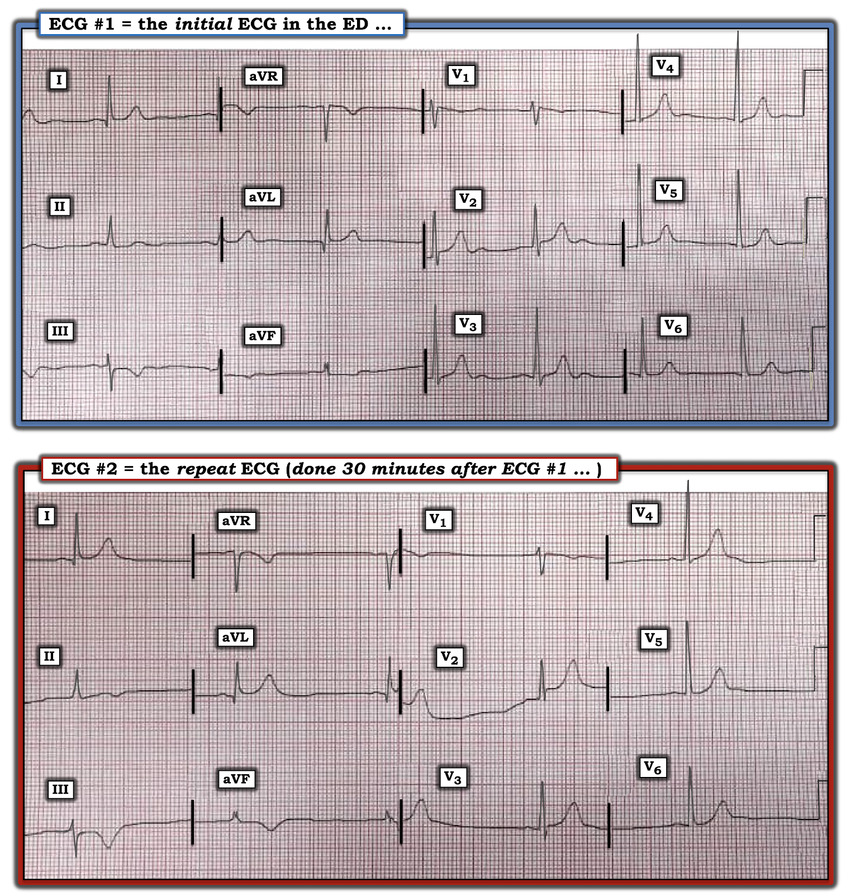

ECG Blog #337 — NSTEMI hay OMI?
Điện tâm đồ trong Hình-1 — được ghi từ một người đàn ông trung niên đến khoa Cấp cứu (ED — Emergency Department) vì đau ngực dữ dội, thời gian không rõ.
- BẠN sẽ đọc bản ghi đầu tiên này như thế nào?


Cách tiếp cận CỦA TÔI với ca hôm nay:
Ngay cả trước khi có kết quả troponin — bệnh sử của ca hôm nay và điện tâm đồ trong Hình-1 đã phải khiến ta lo ngại:
- Việc bệnh nhân này đến ED vì đau ngực dữ dội mới khởi phát lập tức xếp ông vào nhóm "tỷ lệ mắc cao hơn" đối với một biến cố cấp. Việc thời gian triệu chứng "không rõ" — có nghĩa là NẾU ông đã có một biến cố cấp — thì biến cố đó hoặc đang diễn ra cấp tính — hoặc — có thể đã hoàn tất trong vài giờ gần đây (hoặc trong vòng khoảng một ngày qua). Nhận thức được sự không chắc chắn về thời điểm này là tối quan trọng để hiểu các dấu hiệu MẤU CHỐT trên điện tâm đồ ban đầu trong Hình-1.
Về điện tâm đồ trong Hình-1:
Mặc dù độ phân giải của bản ghi ban đầu hôm nay kém (và phải thừa nhận là khó nhìn ra các đường lưới của điện tâm đồ) — nhịp có vẻ là nhịp chậm xoang kèm loạn nhịp. (LƯU Ý: Không có khoảng ngưng đáng kể nào trong nhịp — phức bộ QRS thứ 2 khó thấy vì gần như bị che khuất hoàn toàn bởi chỗ chuyển đổi giữa các chuyển đạo I,II,III và các chuyển đạo aVR,aVL,aVF).
- Tất cả các khoảng (PR,QRS,QTc) đều bình thường ở điện tâm đồ #1. Trục mặt phẳng trán bình thường, ở +20 độ. Không đủ tiêu chuẩn lớn các buồng tim.
- Có sóng Q hẹp, ý nghĩa chưa rõ, ở các chuyển đạo bên cao I và aVL. Có thể có sóng q vách nhỏ ở các chuyển đạo V5,V6.
- Về tăng tiến sóng R — Vùng chuyển tiếp xuất hiện sớm! (tức là, sóng R trở nên cao hơn độ sâu của sóng S ngay giữa chuyển đạo V1-đến-V2).
Các dấu hiệu đáng chú ý nhất ở điện tâm đồ #1 — liên quan đến những thay đổi sóng ST-T tinh tế-nhưng-có-thật ở nhiều chuyển đạo:
- Dấu hiệu "bắt mắt" nhất là sóng T đảo ngược sâu bất ngờ và đối xứng ở chuyển đạo III. Mặc dù sóng T đảo ngược đơn độc ở chuyển đạo III (hoặc ở chuyển đạo aVF) đi kèm phức bộ QRS chủ yếu âm ở chuyển đạo đó không nhất thiết là bất thường (Xem ECG Blog #79) — nhưng ở bệnh nhân hôm nay thì nó lại đáng lo, vì: i) Bệnh sử rất đáng lo ngại; ii) Có bất thường sóng ST-T tinh tế-nhưng-có-thật ở nhiều chuyển đạo khác; và, iii) Vùng chuyển tiếp đột ngột với sóng R cao bất thường ở chuyển đạo V2 có thể phù hợp với nhồi máu thành sau (và nhồi máu cơ tim thành sau rất thường đi kèm nhồi máu cơ tim thành dưới, vốn có thể gây sóng T đảo ngược ở chuyển đạo III).
- Chuyển đạo III bất thường vì, ngoài sóng T đảo ngược sâu — đoạn ST có dạng vòm (coving) (tức là, có hình "mặt mếu") — và điểm J chênh xuống. 2 chuyển đạo dưới còn lại (chuyển đạo II và aVF) đều cho thấy đoạn ST dẹt với ST chênh xuống nhẹ-nhưng-có-thật .
- Chuyển đạo aVL (và ở mức độ ít hơn là chuyển đạo I) — cho thấy hình ảnh soi gương ngược chiều với chuyển đạo III, ở chỗ có ST chênh lên nhẹ với sóng T "đầy đặn" hơn dự kiến.
- Ở các chuyển đạo trước ngực — sóng T ở chuyển đạo V2 cao-hơn-dự-kiến so với chiều cao sóng R ở chuyển đạo này.
- Bình thường có ST chênh lên nhẹ ở chuyển đạo V3 — nhưng đoạn ST ở chuyển đạo này có vẻ đẳng điện, với đoạn ST thẳng đuỗn (thay vì mềm mại và dốc lên nhẹ nhàng). Việc những thay đổi ST-T rất tinh tế này nhiều khả năng là "có thật" — được củng cố bởi gợi ý có ST chênh xuống nhẹ ở các chuyển đạo trước ngực bên.
- T.B. (P.S.): Có sóng U với ý nghĩa chưa rõ ở các chuyển đạo V2,V3,V4 của điện tâm đồ #1 (Tôi không biết K+/Mg++ huyết thanh vào thời điểm ghi bản ghi này).
Tổng hợp tất cả lại:
Xin nhấn mạnh — Các dấu hiệu trên thực sự tinh tế! Dù vậy:
- Bệnh sử của bệnh nhân hôm nay xếp ông vào nhóm "tỷ lệ mắc cao" đối với một biến cố tim cấp hoặc mới xảy ra.
- Dù không có ST chênh lên rõ rệt — sóng T đảo ngược đối xứng sâu-hơn-dự-kiến ở chuyển đạo III — đi kèm ST chênh xuống tinh tế-nhưng-có-thật ở cả 3 chuyển đạo dưới — ở bệnh nhân đau ngực dữ dội với thời gian không rõ này — rõ ràng phù hợp với khả năng có sóng T tái tưới máu sau tắc RCA (Right Coronary Artery — động mạch vành phải) hoặc LCx (Left Circumflex — động mạch mũ trái) mới xảy ra.
- Thay đổi sóng ST-T soi gương (reciprocal) ở các chuyển đạo bên cao I và aVL củng cố nghi ngờ này. ST chênh lên ở các chuyển đạo này có thể biểu thị tổn thương thành bên và/hoặc tái tưới máu thành dưới.
- Nhịp chậm xoang thường đi kèm nhồi máu thành dưới.
- Tổn thương thành sau thường gặp cùng nhồi máu thành dưới. Hình ảnh điện tâm đồ ta thấy ở chuyển đạo V2 phù hợp với "Nghiệm pháp Soi Gương" (Mirror Test) dương tính đối với nhồi máu cơ tim thành sau mới xảy ra, nay đã tái tưới máu (tức là, vùng chuyển tiếp đột ngột với sóng R cao đã thấy ngay từ chuyển đạo V2 — và sóng T ở chuyển đạo V2 cao-hơn-dự-kiến, là hình ảnh soi gương ngược chiều của sóng T đảo ngược đối xứng ở chuyển đạo III).
- Cuối cùng — Bệnh sử đau ngực dữ dội với thời gian không rõ có thể phù hợp với tái tưới máu tự phát sau tắc cấp RCA hoặc LCx.
- ĐIỀU CỐT LÕI: Đặc biệt nếu cơn đau ngực của bệnh nhân vừa mới giảm trước khi ghi điện tâm đồ này — câu chuyện và các dấu hiệu điện tâm đồ có thể hoàn toàn phù hợp với thay đổi tái tưới máu vùng dưới-sau sau khi mạch "thủ phạm" tự mở thông trở lại.
- Suy nghĩ CỦA TÔI: Nếu những điều trên vẫn chưa đủ thuyết phục nhóm tim mạch hội chẩn tiến hành thông tim ngay — thì việc nhanh chóng thu thập thêm dữ liệu có thể giúp làm được điều đó.
DIỄN TIẾN CỦA CA:
Kết quả troponin ban đầu của bệnh nhân này tăng nhẹ. Ông được chẩn đoán NSTEMI ( = Non ST Elevation MI — nhồi máu cơ tim không ST chênh lên) — và được xử trí theo hướng đó. Nhưng trước khi chuyển lên cơ sở chăm sóc tuyến ba — một điện tâm đồ thứ 2 được ghi 30 phút sau điện tâm đồ #1. Để dễ theo dõi — tôi đặt 2 điện tâm đồ này cạnh nhau trong Hình-2.
CÂU HỎI:
- Điện tâm đồ #2 có giúp bạn đánh giá chuyện gì đang xảy ra với bệnh nhân này không?
- BẠN có đồng ý với chẩn đoán NSTEMI không?
- GỢI Ý: Tôi bổ sung 2 ĐIỂM THEN CHỐT (PEARL) sau đây để giúp bạn so sánh điện tâm đồ #2 với điện tâm đồ ban đầu ghi 30 phút trước đó. (Đáng tiếc — tôi không biết tình trạng đau ngực của bệnh nhân vào thời điểm ghi 2 điện tâm đồ này).
ĐIỂM THEN CHỐT #1: Tôi đã nhiều lần nhấn mạnh tầm quan trọng của việc nhận ra rằng khăng khăng đòi tiêu chuẩn tính theo milimét cho STEMI cấp sẽ bỏ sót một tỷ lệ đáng kể (nếu không muốn nói là phần lớn) các ca tắc động mạch vành cấp. Để ôn lại — tôi đưa tài liệu về vấn đề này vào PHẦN BỔ SUNG bên dưới.
- Như trong Hình-3 (ở Phần bổ sung bên dưới) — sự kết hợp các dấu hiệu điện tâm đồ (như những dấu hiệu tôi mô tả cho điện tâm đồ #1 ở trên) — đi kèm triệu chứng tim mới xuất hiện — có thể đủ để chẩn đoán OMI (Occlusion-based MI — nhồi máu cơ tim do tắc) cấp — dù không có ST chênh lên đáng kể.
- Vấn đề nảy sinh vì nhiều ca tắc động mạch vành cấp tự mở thông — rồi lại tự tắc lại. Đôi khi, mạch "thủ phạm" có thể tự mở rồi tự tắc lại nhiều lần — cho đến khi cuối cùng đạt trạng thái sau cùng. Mục tiêu của việc nhận ra OMI cấp trên điện tâm đồ khi không có ST chênh lên rõ rệt — là làm được điều đó ở giai đoạn sớm hơn sẽ mở ra cơ hội can thiệp kịp thời với hy vọng ngăn ngừa tình trạng tắc lại vĩnh viễn về sau kèm tổn thương cơ tim đáng kể.
ĐIỂM THEN CHỐT #2: Điều còn thiếu trong ca hôm nay là một bệnh sử chi tiết hơn, đối chiếu các điện tâm đồ liên tiếp với sự hiện diện và mức độ nặng của triệu chứng. Khi đã có sự đối chiếu này — bạn có thể biết mạch "thủ phạm" đang mở hay đóng, vì:
- Đau ngực tái phát đi kèm ST chênh lên tái phát cho biết mạch "thủ phạm" đã tắc lại.
- Đau ngực giảm (hoặc hết) — đi kèm ST chênh lên giảm (hoặc hết), đặc biệt nếu kèm sóng T đảo ngược (và/hoặc ST chênh xuống) ở những vùng trước đó có ST chênh lên — cho biết mạch "thủ phạm" đã tái tưới máu, và có lẽ hiện đã mở thông.
- Vì các chuyển đạo trước ngực phía trước cho hình ảnh soi gương của các thay đổi sóng ST-T xảy ra ở thành sau thất trái — sự xuất hiện sóng T cao, nhọn ở các chuyển đạo trước ngực phía trước (mà trước đó có ST chênh xuống) — đi kèm triệu chứng giảm — cho thấy tái tưới máu thành sau.
- ĐIỀU CỐT LÕI: Tầm quan trọng của các điện tâm đồ liên tiếp được đối chiếu chặt chẽ với sự dai dẳng và mức độ đau ngực (và/hoặc với việc hết đau ngực) — không thể nói quá về giá trị chẩn đoán của nó trong việc nhận diện các giai đoạn của OMI cấp.


So sánh điện tâm đồ #1 và điện tâm đồ #2:
Đáng tiếc — cả hai bản ghi trong Hình-2 đều thiếu dải nhịp chuyển đạo dài. Dù vậy — có vẻ như ở điện tâm đồ #2 nhịp chậm hơn. Điều này có thể có ý nghĩa, xét đến lo ngại về khả năng nhồi máu dưới-sau mới xảy ra. Về khác biệt trong thay đổi sóng ST-T giữa 2 bản ghi — So sánh từng chuyển đạo giữa điện tâm đồ #1 và điện tâm đồ #2 cho thấy như sau:
- Thay đổi nổi bật nhất với tôi là kích thước sóng T đảo ngược ở chuyển đạo III của điện tâm đồ #2 tăng lên không thể chối cãi. Thêm vào đó — sóng T đảo ngược nay đã thấy rõ ở 2 chuyển đạo dưới còn lại ( = chuyển đạo II và aVF) — trong khi trước đó không thấy.
- Mối quan hệ soi gương ngược chiều (reciprocal) giữa chuyển đạo III và 2 chuyển đạo bên cao ( = chuyển đạo I và aVL) vẫn tiếp diễn — vì kích thước (và độ đầy đặn) của sóng T ở chuyển đạo I và aVL đã tăng rõ ở điện tâm đồ #2, tương xứng với mức tăng kích thước sóng T đảo ngược ở chuyển đạo III. Thêm vào đó — ST chênh lên ở aVL nay nhiều hơn (tương xứng với điểm J chênh xuống mà ta thấy ở chuyển đạo III).
- Ở các chuyển đạo trước ngực — mặc dù thay đổi tinh tế hơn, rõ ràng đã có sự tăng kích thước sóng T (và độ đầy đặn sóng T) ở chuyển đạo V2-đến-V6 của điện tâm đồ #2.
- T.B. (P.S.) Sóng U thấy ở điện tâm đồ #1 30 phút trước đó nay không còn nổi bật. Nếu có thì nhịp chậm lại càng làm sóng U rõ hơn — vì vậy tôi không biết lý do của thay đổi này (tôi không được tiếp cận kết quả xét nghiệm tương ứng với điện tâm đồ #1 và #2).
- ĐIỀU CỐT LÕI: So sánh từng chuyển đạo giữa 2 bản ghi trong Hình-2 — cho thấy thay đổi tái tưới máu tăng lên ở 10/12 chuyển đạo. Với bệnh sử lâm sàng đau ngực dữ dội với thời gian không rõ ở người đàn ông trung niên này — kết luận không thể tránh khỏi đối với tôi khi xem lại ca này, là đã có nhồi máu dưới-sau mới xảy ra (do tắc RCA hoặc LCx) — và sự gia tăng các bất thường sóng ST-T mô tả ở trên ở 10/12 chuyển đạo nhiều khả năng phản ánh tái tưới máu của động mạch "thủ phạm".
- T.B.T.B. (P.P.S.): Việc không có thay đổi đáng kể nào về trục mặt phẳng trán hay hình thái QRS ở tất cả các chuyển đạo — gợi ý rằng mọi thay đổi hình thái sóng ST-T giữa 2 bản ghi này đều "có thật" (và không phải do trục thay đổi hay khác biệt về vị trí đặt điện cực).
ĐIỀU GÌ ĐÃ XẢY RA . . .
Như đã đề cập ở trên — bệnh nhân được chẩn đoán NSTEMI và được điều trị theo hướng đó. Đáng chú ý là trong ngày nằm viện đầu tiên — các giá trị troponin liên tiếp đã tăng rất cao.
- Vì lý do cá nhân — bệnh nhân chọn không thông tim trước khi xuất viện. Ông quay lại để thông tim theo chương trình ~2 tuần sau — và được phát hiện có bệnh nhiều nhánh mạch. Bao gồm bệnh nhẹ ở đoạn gần động mạch vành LAD (Left Anterior Descending — động mạch liên thất trước) — một tổn thương 80% ở lỗ vào của một nhánh chéo thứ 2 lớn — và một tổn thương chủ đạo hẹp 90% ở đoạn giữa RCA, mà khi nhìn lại được cho là động mạch "thủ phạm" gây nhồi máu ở bệnh nhân này. Thân chung động mạch vành trái và động mạch mũ trái không có bệnh đáng kể.
- PCI (Percutaneous Coronary Intervention — can thiệp mạch vành qua da) đã được thực hiện cho RCA — cải thiện dòng chảy mạch vành.
BÀI HỌC cần Rút ra:
OMI cấp ( = nhồi máu cơ tim do tắc động mạch vành cấp — acute coronary Occlusion-based MI) — thường bị bỏ sót trong thực hành hiện nay. Có quá nhiều bác sĩ lâm sàng vẫn "mắc kẹt" trong mô hình "STEMI" mà không nhận ra thực tế lâm sàng là nhiều ca tắc động mạch vành cấp đơn giản là không biểu hiện tiêu chuẩn STEMI (Xin xem PHẦN BỔ SUNG bên dưới để có thêm tài liệu về chủ đề này).
- Chú ý đến sự kết hợp các tiêu chuẩn điện tâm đồ khác — khi được đối chiếu chặt chẽ với bệnh sử lâm sàng (với điểm mức độ đau ngực liên tiếp, giá trị troponin liên tiếp, phát hiện rối loạn vận động thành trên siêu âm tim) — cho phép nhận ra OMI cấp nhanh hơn nhiều (và do đó bắt đầu liệu pháp tái tưới máu giúp cải thiện tiên lượng nhanh hơn nhiều). Ngược lại — dựa vào tiêu chuẩn STEMI tính theo milimét dẫn đến trì hoãn (hoặc bỏ sót hoàn toàn) quá nhiều ca tắc động mạch vành cấp lẽ ra đã có thể được hưởng lợi từ can thiệp kịp thời.
- Không xem xét các yếu tố trên (và các dấu hiệu điện tâm đồ bổ sung mà tôi nêu trong Hình-3 của Phần bổ sung) — dẫn đến việc gán nhãn sai quá nhiều ca nhồi máu cấp không thỏa tiêu chuẩn ST chênh lên tính theo milimét — thành non-STEMI (trong khi thực tế — nhiều ca "NSTEMI" này thực ra là OMI cấp lẽ ra đã được hưởng lợi từ can thiệp kịp thời).
- Các dấu hiệu điện tâm đồ trên bản ghi ban đầu của ca hôm nay — đặc biệt sau khi các dấu hiệu điện tâm đồ bất thường tăng lên một cách động trên bản ghi thứ 2 — đã đủ để chẩn đoán rằng một OMI cấp đã xảy ra (và rằng thông tim kịp thời kèm PCI là có chỉ định). Việc troponin tăng cao rõ rệt sau đó ở bệnh nhân này là bằng chứng của tổn thương cơ tim đáng kể. Không biết được bao nhiêu cơ tim lẽ ra đã có thể được cứu nhờ can thiệp kịp thời.
- Cần thấy rõ rằng chẩn đoán cuối cùng ở ca hôm nay không phải là "NSTEMI". Điều này đã được chứng minh qua thông tim. Thay vào đó — các điện tâm đồ, khi đối chiếu với bệnh sử lâm sàng của ca hôm nay, đã đủ để chẩn đoán một OMI biểu hiện bằng sóng T tái tưới máu mà không được nhận ra như vậy. Bài học rút ra hẳn đã rõ.
=======================================
Lời cảm ơn: Xin cảm ơn một người gửi ẩn danh (từ Malaysia) đã chia sẻ ca bệnh và bản ghi này.
=======================================
Các bài ECG Blog liên quan đến ca hôm nay:
- ECG Blog #205 — Ôn lại Cách tiếp cận hệ thống của tôi khi đọc điện tâm đồ 12 chuyển đạo.
- ECG Blog #193 — minh họa cách dùng nghiệm pháp soi gương (Mirror Test) để dễ nhận ra nhồi máu cơ tim thành sau cấp. Bài này ôn lại những điều cơ bản để dự đoán động mạch "thủ phạm" — cũng như tầm quan trọng của thuật ngữ "OMI" ( = Occlusion-based MI) như một bước tiến so với mô hình STEMI lỗi thời.
- ECG Blog #294 — Làm sao biết NẾU động mạch "thủ phạm" đã tái tưới máu.
- ECG Blog #194 — AIVR như một dấu hiệu cho thấy động mạch "thủ phạm" đã tái tưới máu.
- ECG Blog #285 — thêm một ví dụ về nhồi máu cơ tim thành sau cấp (với nghiệm pháp soi gương dương tính).
- ECG Blog #246 — thêm một ví dụ về nhồi máu cơ tim thành sau cấp (với nghiệm pháp soi gương dương tính).
- ECG Blog #80 — ôn lại cách dự đoán động mạch "thủ phạm" (và đưa thêm một ca minh họa nghiệm pháp soi gương để chẩn đoán nhồi máu cơ tim thành sau cấp).
- ECG Blog #184 — minh họa mối quan hệ soi gương ngược chiều "kỳ diệu" khi có thiếu máu cục bộ cấp giữa chuyển đạo III và chuyển đạo aVL (được trình bày trong Audio Pearl #2 ở bài này).
- ECG Blog #167 — thêm một ca về mối quan hệ soi gương ngược chiều "kỳ diệu" giữa chuyển đạo III và chuyển đạo aVL đã xác nhận OMI cấp.
- ECG Blog #271 — Ôn lại cách xác định đường nền của đoạn ST (kèm bàn luận về thực thể thiếu máu cục bộ dưới nội tâm mạc lan tỏa).
- ECG Blog #258 — Cách "định tuổi" một ca nhồi máu dựa trên điện tâm đồ ban đầu.
- Tầm quan trọng của mô hình OMI (so với mô hình STEMI cũ) mới — Xem Bình luận của tôi trong bài ngày 31 tháng 7 năm 2020 trên Dr. Smith's ECG Blog.
===========================
PHẦN BỔ SUNG (ngày 9 tháng 10 năm 2022):
- Dưới đây là một loạt đường link và tài liệu khác liên quan đến việc phát hiện động mạch “thủ phạm” — và những suy nghĩ của tôi nhằm biện luận cho việc thay thế thuật ngữ “STEMI” bằng “OMI” (với hy vọng tăng đáng kể khả năng phát hiện tắc động mạch vành cấp).
Tải PDF miễn phí từ các phần liên quan trong ECG-2014-ePub của tôi:
- Tệp PDF: Tổng quan về tuần hoàn vành và động mạch “thủ phạm” trong nhồi máu cơ tim cấp —
- Tệp PDF: Nhồi máu cơ tim thành sau và “nghiệm pháp soi gương” (Mirror Test) —

====================================
LƯU Ý: Bài xã luận vừa được BS Steven Smith và BS Pendell Meyers công bố này trình bày chi tiết việc dùng Sóng T Tối cấp trong chẩn đoán OMI cấp — "Hyperacute T-waves Can Be a Useful Sign of Occlusion MI IF Appropriately Defined" (Ann Emerg Med — ngày 3 tháng 3 năm 2023).
====================================

ECG Media PEARL #10 (10 phút Audio) hôm nay — ôn lại khái niệm vì sao thuật ngữ “OMI” ( = Occlusion-based MI) nên thay thế thuật ngữ STEMI quen thuộc hơn — và — ôn lại những điều cơ bản về cách dự đoán động mạch "thủ phạm".

ECG Media PEARL #11 (6 phút Audio) hôm nay — Ôn lại cách biết NẾU động mạch “thủ phạm” (tức là, bị tắc cấp) đã tái tưới máu, dựa trên các tiêu chí lâm sàng và điện tâm đồ.